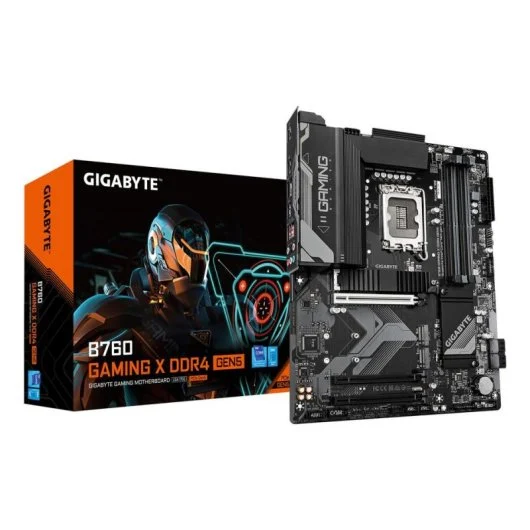
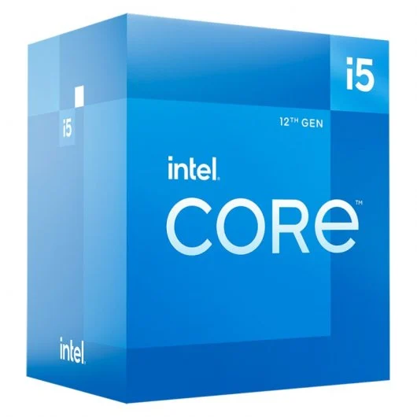
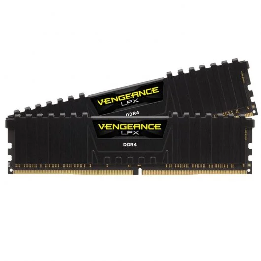
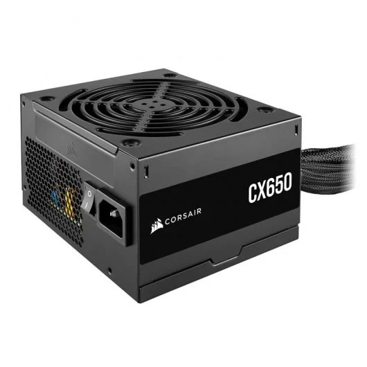
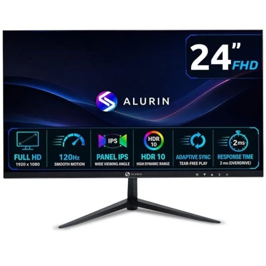

Placa base
La placa base es uno de los principales componentes de un ordenador. A ella se conectan todo el resto de componentes, dispositivos y periféricos, por lo que hay que escogerla con mucho cuidado, ya que el resto de componentes deberán ser compatibles con la placa. Las características de la placa escogida son las siguientes:

Características
- Marca y socket de procesador compatible: Intel LGA 1700
- Memoria compatible: 4x DDR4 (máximo 128 GB)
- Almacenamiento: M.2 y SATA
- Formato: ATX
Precio
177€ en PCComponentes
Procesador
El procesador es el cerebro del ordenador: ejecuta las instrucciones de los programas. Debe tener el mismo socket que la placa base. Las características del procesador escogido son las siguientes:

Características
- Marca: Intel
- Socket: LGA 1700
- Gráficos integrados: sí
- Núcleos: 6
- Frecuencia base: 2,5 GHz
Precio
197€ en PCComponentes
Memoria
La memoria RAM guarda temporalmente los datos y programas que se están using. Tiene que ser del tipo que admita la placa base. Las características de la memoria escogida son las siguientes:

Características
- Tipo: DDR4
- Formato: DIMM
- Capacidad: 16 GB (2 módulos de 8 GB)
Precio
162€ en PCComponentes
Almacenamiento
El disco guarda de forma permanente el sistema operativo, los programas y los archivos. Las características del disco escogido son las siguientes:

Características
- Capacidad: 1 TB
- Tipo de disco: SSD
- Conector: M.2
Precio
150€ en PCComponentes
Torre
La torre o caja es la carcasa donde se montan todos los componentes. Su tamaño tiene que ser compatible con el formato de la placa base. Las características de la torre escogida son las siguientes:

Características
- Formato: ATX (semitorre)
Precio
52€ en PCComponentes
Fuente de alimentación
La fuente de alimentación transforma la corriente de la red eléctrica y da energía a todos los componentes del ordenador. Las características de la fuente escogida son las siguientes:

Características
- Potencia: 650 W
- Formato: ATX
- Eficiencia: 80 Plus Bronze
Precio
57€ en PCComponentes
Monitor
El monitor es el dispositivo donde vemos lo que hace el ordenador. Las características del monitor escogido son las siguientes:

Características
- Resolución: 1920x1080 (Full HD)
- Pulgadas: 24
- Tipo de conexión con la placa: HDMI
Precio
80€ en PCComponentes